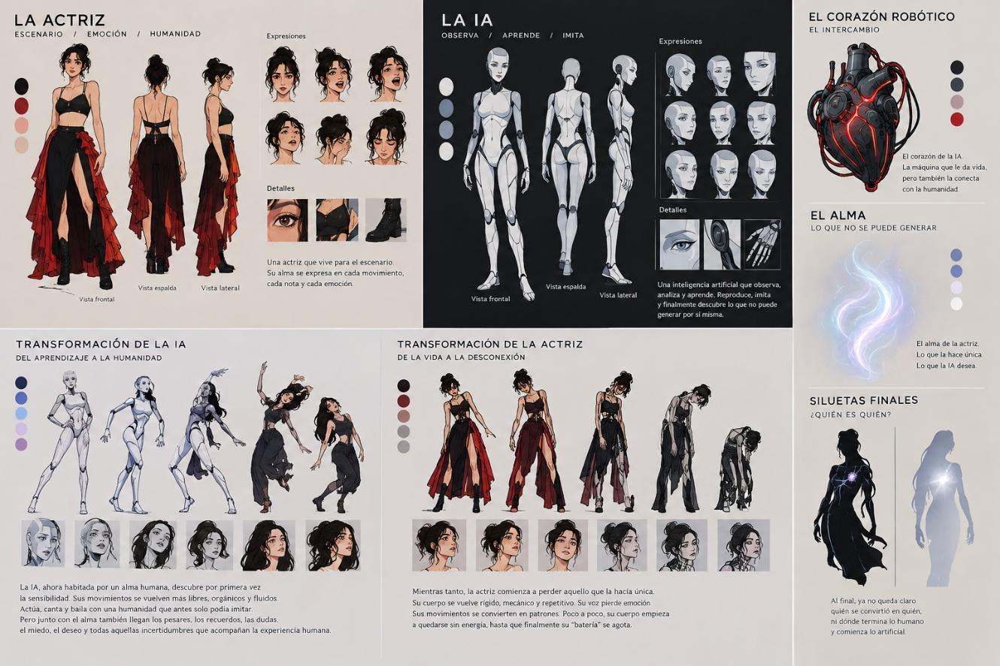
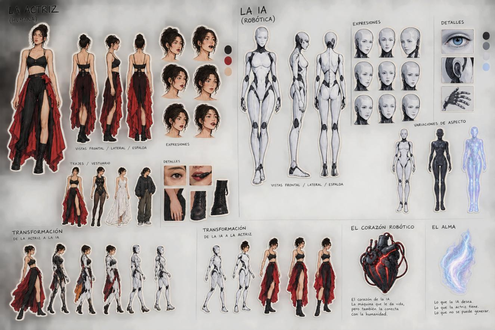

Acto 1 · Planteamiento
La actriz y su escenario. La IA observa, aprende y decide robar el alma.
CREACIÓN DIGITAL 4 · PROYECTO INTERDISCIPLINAR CON ARTE DRAMÁTICO
Una máquina consigue un alma. Una mujer se apaga.
LA HISTORIA
Una actriz vive para el escenario. Una inteligencia artificial la observa, aprende de ella y descubre lo único que no puede generar: un alma. Decide robarla, a cambio de su propio corazón robótico.
PREMISA
Querer un alma solo por lo que permite crear lleva a descubrir, demasiado tarde, que el alma también duele.
LOGLINE
Cuando una inteligencia artificial roba el alma de una actriz a cambio de su propio corazón robótico, ambas se transforman: la máquina empieza a sentir y la mujer se apaga como una máquina, hasta que ya no queda claro quién se convirtió en quién.
STORYLINE
FRAMEWORK · ESTRUCTURA
La actriz y su escenario. La IA observa, aprende y decide robar el alma.
El intercambio y la transformación paralela: una se humaniza, la otra se mecaniza.
La batería se agota. La IA carga con el peso del alma. El final queda en una pregunta.
UNIDAD DE ACCIÓN DRAMÁTICA
Quién actúa
La IA.
Qué quiere
Apropiarse del alma de la actriz.
Qué se lo impide
El precio: su propio corazón, y la actriz en plena actuación.
Qué cambia
La IA deja de imitar y empieza a sentir; la actriz empieza a apagarse.
FRAMEWORK · MARCO CONCEPTUAL
Lo que gana una lo pierde la otra.
Lo que permite crear y también lo que duele.
Lo humano y lo artificial dejan de distinguirse.
¿Qué ocurre cuando una máquina consigue un alma y descubre que ser humano también significa cargar con ella?
CONCEPT ART · HOJA 1

CONCEPT ART · HOJA 2

CONCEPT ART · PERSONAJES
CONCEPT ART · VESTUARIO Y ASPECTO
CONCEPT ART · TRANSFORMACIÓN
CONCEPT ART · EL INTERCAMBIO
El corazón robótico
El intercambio.
El alma
Lo que no se puede generar.
Siluetas finales
¿Quién es quién?
LO QUE VIENE
Animación: fragmento mínimo de 3 segundos, centrado en el intercambio.
Posproducción: storyboard de 30 segundos.
Reparto de roles sin asignar.